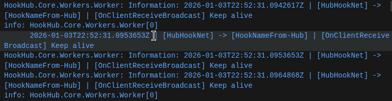

Key Features
🔗
Reliable Messaging
Built on ASP.NET Core SignalR, HookHub enables robust WebSocket and Long Polling support with automatic reconnection and keep-alive mechanisms.
🏢
Central Hub Routing
Multiple services (Hooks) connect to a central Hub for bidirectional communication and real-time message broadcasting.

📊
Management API & Dashboard
Includes REST API endpoints for hook management and a web UI to view active connections and send test messages.